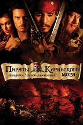

Когда засуха приводит человечество к продовольственному кризису,
коллектив исследователей и ученых отправляется сквозь червоточину
(которая предположительно соединяет области пространства-времени
через большое расстояние) в путешествие, чтобы превзойти прежние
ограничения для космических путешествий человека и переслать
человечество на другую планету.
Когда засуха приводит человечество к продовольственному кризису,
коллектив исследователей и ученых отправляется сквозь червоточину
(которая предположительно соединяет области пространства-времени
через большое расстояние) в путешествие, чтобы превзойти прежние
ограничения для космических путешествий человека и переслать
человечество на другую планету.
 Война за ресурсы привела к краху цивилизации, на просторах
постапокалиптической пустоши Австралии царствуют безумие и
дикие банды на самодельном транспорте. Даже моря начали высыхать
и оставлять после себя пустыню. Бывший «Воин Дороги», а теперь
странник-одиночка Макс Рокатански, скитается по Пустоши,
мучимый видениями о тех, кого он знал и не смог спасти.
Так он попадает в плен к налётчикам из Цитадели — процветающего поселения,
стоящего на подземных источниках воды и управляемого диктатором Несмертным Джо,
которого подданные считают богом во плоти, а верные ему «воины полураспада»
искренне веруют, что после смерти будут гонять вместе с ним по просторам Вальхаллы.
Война за ресурсы привела к краху цивилизации, на просторах
постапокалиптической пустоши Австралии царствуют безумие и
дикие банды на самодельном транспорте. Даже моря начали высыхать
и оставлять после себя пустыню. Бывший «Воин Дороги», а теперь
странник-одиночка Макс Рокатански, скитается по Пустоши,
мучимый видениями о тех, кого он знал и не смог спасти.
Так он попадает в плен к налётчикам из Цитадели — процветающего поселения,
стоящего на подземных источниках воды и управляемого диктатором Несмертным Джо,
которого подданные считают богом во плоти, а верные ему «воины полураспада»
искренне веруют, что после смерти будут гонять вместе с ним по просторам Вальхаллы.
 Молодой человек Томас Андерсон ведёт двойную жизнь. Днём он — программист в
крупной компании, а ночью — хакер Нео. Однажды на его персональный компьютер
приходит странное сообщение: «Ты увяз в Матрице» (The Matrix has you).
Неизвестный даёт ему указание «идти за белым кроликом».
Сразу после этого сообщения к Нео приходят его заказчики.
Расплатившись с Нео, они приглашают его в ночной клуб. Томас сначала отказывается,
но, увидев на спине у девушки заказчика татуировку в виде белого кролика,
передумывает и отправляется с ними. В клубе он знакомится с девушкой-хакером
по имени Тринити. Она обещает раскрыть Томасу тайну Матрицы, но для этого Нео должен
встретиться с Морфеусом, который давно ищет Нео. Власти разыскивают Морфеуса
как опаснейшего террориста.
Молодой человек Томас Андерсон ведёт двойную жизнь. Днём он — программист в
крупной компании, а ночью — хакер Нео. Однажды на его персональный компьютер
приходит странное сообщение: «Ты увяз в Матрице» (The Matrix has you).
Неизвестный даёт ему указание «идти за белым кроликом».
Сразу после этого сообщения к Нео приходят его заказчики.
Расплатившись с Нео, они приглашают его в ночной клуб. Томас сначала отказывается,
но, увидев на спине у девушки заказчика татуировку в виде белого кролика,
передумывает и отправляется с ними. В клубе он знакомится с девушкой-хакером
по имени Тринити. Она обещает раскрыть Томасу тайну Матрицы, но для этого Нео должен
встретиться с Морфеусом, который давно ищет Нео. Власти разыскивают Морфеуса
как опаснейшего террориста.

Действия фильма происходит в начале XVIII века в Карисбком море. На Порт-Ройал,
Ямайка, нападают пираты с "Черной Жемчужины" под Гектора Барбоссы. Во время налета
пираты похищают единственное дитя губернатора Ямайки, его дочь Элизабет. За пиратами
отправляют погоню, но "Черная Жемчужина" неуловима. В отчаянии любимый похищенной
Уилл Тернер обращается за помощью к единственному, кто способен выследить "Жемчужину" -
капитану Джеку Воробью, ожидающему казнь. Уилл вынужден помочь Джеку бежать и вместе с ним
отправиться на поиски Барбоссы.